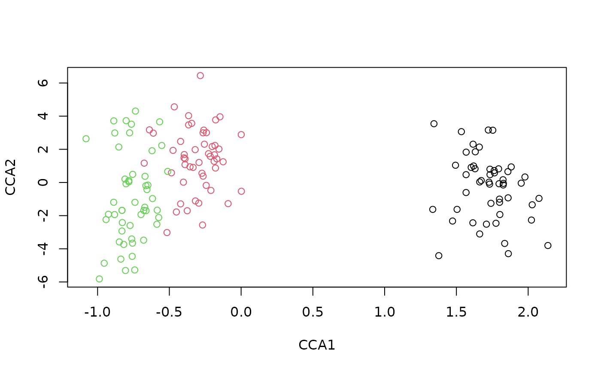

Constrained ordination of samples from their feature abundances in the
chi-square metric: the axes of correspondence analysis that sample
metadata explain, followed by correspondence analysis axes of what they
leave unexplained (ter Braak 1986). Gives the same results as
vegan::cca(), computed straight from sparse input without forming any
\(n \times n\) or dense table, so it takes far less time and
memory for large datasets. With Condition() terms, partial CCA.
Usage
cca(
counts,
groups,
data = NULL,
formula = NULL,
margin = 1L,
n_axes = 3L,
permutations = 1000L,
seed = 0L,
cpus = n_cpus()
)Arguments
- counts
A numeric matrix of non-negative feature abundances (samples \(\times\) features), or any of the table types listed under "Input Types". Every sample must have at least one non-zero abundance. Alternatively, as in
vegan::cca(), a formula with the table on its left-hand side and the constraints on its right, such ascounts ~ treatment, in place ofcountsandformula; the metadata may then be given second, as incca(counts ~ treatment, meta).- groups
The one variable that constrains the ordination: a vector or factor with one value per sample, matched to the samples in
countsby name when both are named, else in the same order. Or, whendatais given, the name of one of its columns (or a vector with one value per row ofdata). Categories (factor, character, or logical) or a numeric covariate. The same asformula = ~ groups. Givegroupsorformula, or neither for an unconstrained correspondence analysis.- data
Sample metadata: a data frame with one row per sample, holding the columns named in
groupsorformula. Rows are matched to the samples incountsby row name, and rows for other samples are ignored; without row names, they must be in the same order as the samples. Default:NULL.- formula
Instead of
groups, for models of several variables: a one-sided formula naming the variables indatathat constrain the ordination, such as~ treatment + ph. Factors, numeric covariates, and interactions are all allowed. Wrap variables inCondition()to remove their effect first (partial CCA), as invegan::cca():~ treatment + Condition(site). With onlyCondition()terms, the result is the correspondence analysis of the table after removing their effect. A left-hand side, if given, is ignored. Default:NULL.- margin
The margin containing samples.
1if samples are rows,2if samples are columns. Ignored whencountsis a special object class (e.g.phyloseq). Default:1- n_axes
The number of axes to return. Default:
3. Reduced, with a warning, to the number of axes with positive eigenvalues, which is at most \(n - 1\) for \(n\) samples.- permutations
The number of permutations for
adj_r_squared. Default:1000, asvegan::RsquareAdj(). Alternatively, a matrix with one permutation of1:nper row, as frompermute::shuffleSet(), to use instead of random ones.0gives anadj_r_squaredofNA. Unused without constraints.- seed
An integer seed for the random permutations. The same seed gives the same
adj_r_squared. Default:0- cpus
How many parallel processing threads should be used. The default,
n_cpus(), will use all logical CPU cores.
Value
A numeric matrix with one row per sample and one column per axis,
as described in "Ordination result" below. Constrained axes come first,
named "CCA1", "CCA2", etc. If the constraints give fewer than
n_axes of them, unconstrained axes follow, named "CA1", "CA2",
etc. The values are vegan's site scores ("wa" scores, scaling 2):
what vegan::scores(x, display = "sites") returns and what
phyloseq::plot_ordination() plots. Its attributes are those of
rda(), with the same meanings, but for inertia in place of variance:
method:"cca".eig: The eigenvalue (inertia) of each axis.prop: The proportion of the inertia that each axis explains, not counting the conditional inertia:eig / (trace - inertia[["conditional"]]).vegan's "Proportion Explained".trace: The total inertia: Pearson's chi-square statistic of the table divided by its grand total (vegan'stot.chi).inertia: The total inertia split into three parts, which add up totrace: a named vector ofconditional: explained by theCondition()variables (0if there are none);constrained: explained by the constraints, after the conditions (the sum of all constrained eigenvalues);unconstrained: the rest.
constrained_eig: Every non-zero constrained eigenvalue.r_squared: The proportion of the total inertia that the constraints explain,inertia[["constrained"]] / trace, asvegan::RsquareAdj(x)$r.squared.adj_r_squared:r_squaredadjusted by permutation, asvegan::RsquareAdj(x)$adj.r.squared(see "Adjusted R-squared" below).0without constraints;NAforpermutations = 0, or a model with no residual degrees of freedom.biplot: Biplot scores of the constraints: their weighted correlations with the constrained axes' "lc" scores, one row per column of the model matrix and one column per axis (0for unconstrained axes).vegan::scores(x, display = "bp").centroids: The weighted centroid of each factor level on each axis, asvegan::scores(x, display = "cn"), orNULLif no variable is a factor.loadings: The species scores: one row per feature and one column per axis,vegan::scores(x, display = "species")(scaling 2). Features with no observations get0.
Details
This is canonical correspondence analysis, a unimodal method for species abundances. It is not canonical correlation analysis, which scikit-learn, MultivariateStats.jl and linfa also call "CCA".
Method
With \(P\) the table divided by its grand total, and \(r\) and \(c\) its row and column sums (the sample and feature weights), CCA (ter Braak 1986; Legendre & Legendre 2012, §11.2) analyzes the matrix of chi-square residuals \(\bar{Q} = D_r^{-1/2} (P - rc^T) D_c^{-1/2}\), as correspondence analysis does (§9.2). The constraints are centered and regressed with the weights \(r\). With \(H\) the projection onto the weighted constraints, after removing any conditions, the constrained axes are the principal components of \(H\bar{Q}\), and the unconstrained axes those of \((I - H)\bar{Q}\). Site scores are divided by \(\sqrt{r}\), and species scores by \(\sqrt{c}\).
cca() shares its solver with rda() and dbrda(): the constrained
axes come from a small eigenproblem with one row per constraint column,
and the unconstrained axes, when needed, from block Lanczos iteration.
Both need only products of \(\bar{Q}\) with a few vectors at a time.
\(\bar{Q}\) is a sparse matrix less a rank-one term, so these are
computed in parallel from the table's non-zero values alone, and a
sparse table is never made dense.
CCA or RDA?
CCA and correspondence analysis assume that each species responds
unimodally to the gradients, peaking at some optimum; RDA and PCA assume
linear responses. Over long gradients, where many species are absent
from much of the range, unimodal methods suit better; over short ones,
linear methods on transformed abundances (tb-RDA:
rda(counts, ..., norm = 'hellinger')) are often preferred (Legendre &
Gallagher 2001). The chi-square metric gives rare species a large
weight, so CCA can be sensitive to them.
Adjusted R-squared
Ezekiel's adjustment, which rda() uses, is biased for CCA (Peres-Neto
et al. 2006). So, as vegan::RsquareAdj() does, cca() estimates it by
permutation: \(R^2_{adj} = 1 - (1 - R^2) / (1 - \bar{R}^2_{perm})\),
where \(\bar{R}^2_{perm}\) is the mean \(R^2\) over permutations
random permutations of the samples (their rows of the table, against the
constraints). It is random: the same seed gives the same value, and
a permutations matrix the same value as
vegan::RsquareAdj(x, permutations = matrix).
For partial CCA, as in vegan, it is the adjusted \(R^2\) of the
constraints and conditions together less that of the conditions alone
(Peres-Neto et al. 2006). Each is estimated as above, but permuting the
rows of the chi-square matrix \(\bar{Q}\) against the fixed
(weighted) design, as vegan::RsquareAdj() does for partial models.
Matching vegan
cca() gives the same scores, eigenvalues, inertia, \(R^2\), biplot
scores, centroids and species scores as vegan::cca(), up to the signs
of the axes. Columns of the model matrix that are linear combinations of
earlier ones are dropped, with a message, as in vegan. Samples with no
observations are an error, as in vegan; features with no observations
have no weight, and get species scores of 0.
With no constraints, cca(counts) is a correspondence analysis, as
vegan::cca(counts), and the same as ca().
Permutation tests
cca() has no permutation test of its own; vegan::anova.cca() gives
one. (Unlike RDA's, CCA's test is not a PERMANOVA of any distance.)
Same names in other packages
vegan::cca() shares its name with ecodive's cca(), and whichever
package was attached last masks the other's. Write ecodive::cca(), or
use count_ord(), which always runs ecodive's, to be sure.
Axis signs and reproducibility
An eigenvector's sign is arbitrary, so different software can return
mirror images of the same axis. cca() flips each axis so that its
largest score in absolute value is positive, and flips the biplot scores,
centroids and loadings with it. Results are identical from run to run
and for any number of cpus.
Ordination result
Every ordination function (pcoa(), pca(), rpca(), dbrda(), capda(),
capscale(), mds(), nmds(), isomap(), tsne(), umap(), and so
dist_ord()) returns the same kind of
object: a numeric matrix with one row per sample and one column per
axis, so that it can go straight into a data frame. Rows are
named after the samples, when the input has names. Columns are named
after the method: "PCoA1", "PC1", "RPCA1", "dbRDA1" or "CAP1"
(then "MDS1" for unconstrained axes), "MDS1", "NMDS1",
"Isomap1", "TSNE1", "UMAP1", and so on.
Its attributes always begin with these three, in this order, each with one value per column:
method: The method's ID, e.g."pcoa"or"nmds".eig: Each axis's eigenvalue, on the method's own scale:pcoa()andisomap()give the eigenvalues of Gower's centered matrix (sums of squares);pca()andrpca()give variances, which arepcoa()'s divided by \(n - 1\) for \(n\) samples; anddbrda()andcapscale()followvegan, which also divides by \(n - 1\) when any distance is 4 or more.NAformds(),nmds(),tsne(), andumap(), which have no eigenvalues.prop: The proportion of the total variance (or inertia) that each axis explains. Unlikeeig, it is comparable between methods, so use it to label axes.NAwhere it isn't defined.
Attributes particular to the method follow them, and last, the records
of how it was made (see ecodive_steps): dist, the distance
matrix's, for the methods that take distances, and ord, the
ordination's own (its method, display name and settings). The matrix has class
"ecodive_ord" (as well as "matrix"), so that print() lists the
other attributes by name rather than in full, and plot() draws the
samples on the first two axes, labelled from the attributes, with any
loadings, constraints and centroids on top (see plot.ecodive_ord()).
plot(ord, "Species", iris) colours the samples by a column of
metadata. Subsetting with [, or as.data.frame(), gives a plain
matrix or data frame without the attributes.
Input Types
The counts parameter is designed to accept a simple numeric matrix, but
seamlessly supports objects from the following biological data packages:
phyloseqrbiomSummarizedExperimentTreeSummarizedExperiment
For large datasets, standard matrix operations may be slow. See
vignette('performance') for details on using optimized formats
(e.g. sparse matrices) and parallel processing.
References
ter Braak, C. J. F. (1986). Canonical correspondence analysis: a new eigenvector technique for multivariate direct gradient analysis. Ecology, 67(5), 1167-1179. doi:10.2307/1938672
Legendre, P., & Gallagher, E. D. (2001). Ecologically meaningful transformations for ordination of species data. Oecologia, 129(2), 271-280. doi:10.1007/s004420100716
Peres-Neto, P. R., Legendre, P., Dray, S., & Borcard, D. (2006). Variation partitioning of species data matrices: estimation and comparison of fractions. Ecology, 87(10), 2614-2625. doi:10.1890/0012-9658(2006)87[2614:VPOSDM]2.0.CO;2
Legendre, P., & Legendre, L. (2012). Numerical Ecology (3rd ed.). Elsevier.
Greenacre, M. (2007). Correspondence Analysis in Practice (2nd ed.). Chapman & Hall/CRC.
See also
ca(), rda(), dbrda(), pca(), count_ord()
Examples
counts <- round(iris[, 1:4] * 10)
ord <- cca(counts, 'Species', iris)
plot(ord, 'Species', iris)

attr(ord, 'r_squared')
#> [1] 0.9422429
attr(ord, 'loadings')
#> CCA1 CCA2 CA1
#> Sepal.Length 0.1012504 0.01226335 0.02866820
#> Sepal.Width 0.3041887 -0.01995636 -0.04396019
#> Petal.Length -0.2690171 0.01149205 0.02393515
#> Petal.Width -0.4258030 -0.04488553 -0.10261133
# vegan's style, with a numeric constraint.
ord <- cca(counts ~ Petal.Width, iris, n_axes = 2)
str(ord)
#> 'ecodive_ord' num [1:150, 1:2] 1.93 1.76 1.89 1.72 1.96 ...
#> - attr(*, "dimnames")=List of 2
#> ..$ : NULL
#> ..$ : chr [1:2] "CCA1" "CA1"
#> - attr(*, "method")= chr "cca"
#> - attr(*, "eig")= num [1:2] 0.05393 0.00876
#> - attr(*, "prop")= num [1:2] 0.841 0.137
#> - attr(*, "trace")= num 0.0641
#> - attr(*, "inertia")= Named num [1:3] 0 0.0539 0.0102
#> ..- attr(*, "names")= chr [1:3] "conditional" "constrained" "unconstrained"
#> - attr(*, "constrained_eig")= num 0.0539
#> - attr(*, "r_squared")= num 0.841
#> - attr(*, "adj_r_squared")= num 0.84
#> - attr(*, "biplot")= num [1, 1:2] -1 0
#> ..- attr(*, "dimnames")=List of 2
#> .. ..$ : chr "Petal.Width"
#> .. ..$ : chr [1:2] "CCA1" "CA1"
#> - attr(*, "loadings")= num [1:4, 1:2] 0.1024 0.2762 -0.2453 -0.4347 -0.0141 ...
#> ..- attr(*, "dimnames")=List of 2
#> .. ..$ : chr [1:4] "Sepal.Length" "Sepal.Width" "Petal.Length" "Petal.Width"
#> .. ..$ : chr [1:2] "CCA1" "CA1"
#> - attr(*, "ord")= Canonical Correspondence Analysis (method = cca, formula = ~Petal.Width, margin = 1, n_axes = 2, permutations = 1000, seed = 0)
# Without constraints, a correspondence analysis.
head(cca(counts))
#> CA1 CA2 CA3
#> [1,] 1.808718 -0.02363406 0.0946769
#> [2,] 1.642803 0.87122963 1.3117351
#> [3,] 1.778758 -0.03248420 0.2454927
#> [4,] 1.613485 0.32810647 -0.6368010
#> [5,] 1.841613 -0.38244840 -0.6112067
#> [6,] 1.598380 -0.99156726 -0.4130386